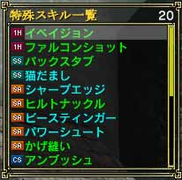
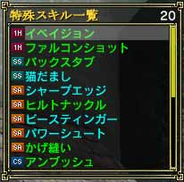

最も一般的な武器の特殊スキルの取得方法としては、クエストによる取得があります。これは町にいる「特殊技師範」から受けることができます。
ただし武器スキルのレベルが 10 を越えている必要があります。内容としては「◯◯を倒したときに落とす◯◯を持ってこい」というタイプのものです。
依頼を受けると、通常のクエスト同様、引き受けるかどうかのダイアログが表示されるので「引き受ける」を選んでください。ちなみに達成できなくともペナルティーはないので安心してください。
依頼を受けた状態でゲームにログインすると、マップのどこかに倒さなければならない敵が出てきます。敵の落としたアイテムを「特殊技師範」にトレードしてしてください。これで特殊スキルの取得は終わりです。
ちなみに倒さなくてはならない敵は、ランク1の場合でもクラスレベル20以上ないと一人で倒すのはかなり厳しいので、早めに取得したい場合はパーティーを組んでください。
ランク1,4 の特殊武器スキルは「特殊技師範」から取得します。ランク1 の場合は出身国の「特殊技師範」ですが、ランク4 はペンタウァの「特殊技師範」から取得することになります。
ランク2,3 の特殊武器スキルは全て「特殊技師範」以外のNPCから取得できます。彼らは各国に散らばっており、条件を満たしたプレイヤーは直接会いに行く必要があります。クエストの内容はランク1 同様、「○○を倒したときに落とす○○を持ってこい」というものです。目的の敵を倒したら、忘れずに依頼されたNPCにトレードするようにしてください。 |
|
 
